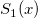
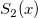
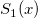
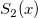
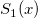
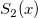

/math-8d88a43872d6db6535d8672a15f09ce2.png "n_1\,\!") と
と /math-ede03c8aef1b07c898c7747b489fd765.png "n_2\,\!") の2つの独立したサンプルX、Yを考えます。それぞれ、
の2つの独立したサンプルX、Yを考えます。それぞれ、/math-d79752c45b6e0288c460390908ff4157.png "x_1,x_2,\ldots ,x_{n_1}\,\!") と
と /math-ba3bf26bc53cf72dd2f7e804e8351ba7.png "y_1,y_2,\ldots ,y_{n_1}\,\!") で示されます。F(x) および G(x)がそれぞれの未知の分布関数を表すとします。そして、サンプルの経験的分布関数の値を と で示します。
で示されます。F(x) および G(x)がそれぞれの未知の分布関数を表すとします。そして、サンプルの経験的分布関数の値を と で示します。
以下の説明は、NAGのアルゴリズムから引用したものです。
サイズ と の2つの独立したサンプルX、Yを考えます。それぞれ、 と で示されます。F(x) および G(x)がそれぞれの未知の分布関数を表すとします。そして、サンプルの経験的分布関数の値を と で示します。
帰無仮説 :F(x)=G(x) です。
対立仮説 /math-fabff59271b950125b7a360fba21de2c.png "H_1\,\!") : F(x)<>G(x) p値は両側確率になります。
: F(x)<>G(x) p値は両側確率になります。
または、 :F(x)>G(x) p値は上側の片側確率になります。
または、: F(x)<G(x) p値は下側の片側確率になります。
最初の の場合、統計量 /math-a9aca3b08301eb7213e2408c0ab85104.png "D_{n_1,n_2} \,\!") が、2つの経験分布関数の最大絶対偏差を表します。
が、2つの経験分布関数の最大絶対偏差を表します。
2番目の の場合、統計量 が、最初の標本の経験分布関数と2番目の標本の経験分布関数との間の正の最大絶対偏差を表します。つまり /math-9cf98ed19b4ee4732ba5e4524e54a3f8.png "D_{n_1,n_2}^{+}=\max \{S_1(x)-S_2(x),0\}\,\!") です。
です。
3番目の の場合、統計量 /math-8af9c1a0d88a260554650e06fd515607.png "D_{n_1,n_2}^{-} \,\!") が、2番目の標本の経験分布関数と最初の標本の経験分布関数との間の正の最大絶対偏差を表します。つまり
が、2番目の標本の経験分布関数と最初の標本の経験分布関数との間の正の最大絶対偏差を表します。つまり /math-6a6a55b10a26fafb59197daab9f6d53b.png "D_{n_1,n_2}^{-}=\max \{S_2(x)-S_1(x),0\}\,\!") です。
です。
KS検定2も標準的な統計量 /math-3e29b728262edf3639e74270b72e638a.png "Z=\sqrt{(n_1*n_2)/(n_1+n_2)}*D\,\!") を返します。
を返します。
ここで/math-a7c6c783c5d03fc91d0594b217f56580.png "D\,\!") は
は/math-3f75caf92b4b313ec5ec353b2df6a0b0.png "D_{n_1,n_2} \,\!") 、、で、対立仮説の選択に依存します。
、、で、対立仮説の選択に依存します。
統計量 /math-07b1048bc60901fe82394ae47282671c.png "Z\,\!") の分布は、 と
の分布は、 と /math-2f6fac59fce80e76d698bcf5ea77bab6.png "n_2\,\!") が増加すると、Smirnovによって与えられる分布に近づくように収束します。帰無仮説の下で、観測統計量の極値として検定統計量の値を取得する確率が計算されます。
が増加すると、Smirnovによって与えられる分布に近づくように収束します。帰無仮説の下で、観測統計量の極値として検定統計量の値を取得する確率が計算されます。
/math-caeb72e22c815c3c25d6a8b427c8aaad.png "max(n_1,n_2)\leq 2500\,\!") および
および /math-be2983946ebf66a1fd9de27574f27b22.png "n_1*n_2\leq 10000\,\!") の場合、KimとJinrichによって与えられる方法が使われます。あるいは、
の場合、KimとJinrichによって与えられる方法が使われます。あるいは、/math-c0f582773fdbd168bbab09a1e6159c46.png "p\,\!") は、 KimとJenrich (1973)による近似式を用いて計算されます。
は、 KimとJenrich (1973)による近似式を用いて計算されます。
この方法は、連続的な理論分布に対してのみ正確に使用できることに注意してください。
この手法は、両側確率を計算します。片側確率は、両側確率より推定されます。これは小さな 、つまり に対する適切な推定値ですが、 が大きくなると不確かになります。
このアルゴリズムの詳細は、nag_2_sample_ks_test (g08cdc)をご覧下さい。